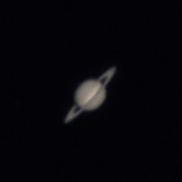

One or two sentences setting up the shot — conditions, and how the rings were presenting that season.

🪐
Saturn photo
assets/about/astronomy/saturn.jpg
Short caption — date, ring tilt, whether the Cassini division separated
What you're seeing
Your space. The ring system and its tilt, whether the Cassini division resolved, the shadow the planet casts on the rings, any moons in frame — Titan is usually the reachable one.
How it was captured
Date & time
when
Location
where
Telescope
make / model / aperture
Mount
type, tracked or manual
Camera
phone, DSLR, planetary cam
Capture
exposure, frame rate, duration
Processing
stacking software, % of frames kept, sharpening
Seeing
steady, average, poor
What was difficult
One honest paragraph. Saturn is dim compared to Jupiter, so exposure and focus both get harder — if that was your struggle, describe it plainly rather than glossing over it.